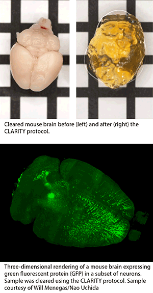

News Archives : 2016 : Shining the Laser-light on Tissue Clearing at the Harvard Center for Biological Imaging
by Doug Richardson
January 5, 2016
On November 20th – 22nd, 2015 the Harvard Center for Biological Imaging (HCBI) hosted its inaugural three-day Tissue Clearing Workshop (TCW 2015). Cleared tissue imaging has emerged as a powerful technique for rendering centimeter sized biological tissues and organs transparent in order to enable three dimensional volume imaging via light microscopy. In the absence of tissue clearing, a light microscope is limited to an imaging depth of only 100-200 um with 1-photon excitation or < 800 um with 2-photon excitation.
25 attendees from as far away as South Korea, Japan and New Zealand travelled to the Harvard campus for three exciting days of lectures, hands-on wet labs and imaging demonstrations. Lectures were given by a number of experts in the field including HCBI Faculty Director Jeff Lichtman, HCBI Director of Imaging Doug Richardson, Nicholas Renier from The Rockefeller University, and MCO students Jenelle Wallace and Will Menegas.
The workshop focused on two of the leading tissue clearing techniques: CLARITY and iDISCO. CLARITY and iDISCO were chosen as they represent the two major categories of tissue clearing techniques: solvent-based (iDISCO) and aqueous-based (CLARITY).
The solvent-based branch of tissue clearing has shown a very linear progression with each new method building on its predecessor (Spalteholz, BABB, 3DISCO, iDISCO). iDISCO is a simple, economical, and fast protocol for reproducibly achieving a high level of clearing in samples 200 um to centimeters in size. Unfortunately, the current solvents used in the process can quench the native emission of fluorescent proteins and are incompatible with high-resolution microscope objectives that “dip” into the mounting solution during imaging.
Although the development of aqueous-based clearing has been much less linear and many different methods have been published, only CLARITY (and it’s more recent update PACT/PARS) provide the ability to reliably clear samples greater than 0.5 mm in size. CLARITY also maintains fluorescent protein emission, and a number of microscopy manufacturers now produce high resolution objective lenses designed specifically for imaging CLARITY samples.
During day one of the workshop attendees were introduced to the basic concepts of light scatter in biological tissues, the molecular mechanisms behind a number of tissue clearing techniques, and proper sample preparation. On day two, a number of methods for imaging cleared tissue were investigated. A number of imaging platforms (structured illumination, confocal, 2-photon, and lightsheet) were discussed and demonstrated to provide a complete understanding of their advantages and disadvantages. Day 3 comprised a discussion regarding data handling and analysis, as well as free time in the HCBI to image samples that attendees had brought with them.
Attendees provided a great deal of positive feedback during and after the course. Including those who felt the workshop was very “timely” as cleared tissue imaging is moving to the forefront of a number of scientific fields. Others stated that they enjoyed the in depth nature of the course covering all facets of tissue clearing right down to the basics of “learning the physics behind clearing and refractive index matching.” A number of attendees were excited to “directly put into practice” the approaches learned during the workshop thanks to an environment of “open sharing of scientific knowledge”.
The HCBI is pleased that TCW 2015 was well received and is looking forward to planning TCW 2016 next fall!
References:
CLARITY –
K. Chung, J. Wallace, S. Y. Kim, S. Kalyanasundaram, A. S. Andalman, T. J. Davidson, J. J. Mirzabekov, K.
A. Zalocusky, J. Mattis, A. K. Denisin, S. Pak, H. Bernstein, C. Ramakrishnan, L. Grosenick, V. Gradinaru
and K. Deisseroth. (2013). Structural and molecular interrogation of intact biological systems. Nature
(497), 332-337. PDF
iDISCO –
N. Renier, Z. Wu, D. J. Simon, J. Yang, P. Ariel and M. Tessier-Lavigne. (2014). iDISCO: a simple, rapid method to immunolabel large tissue samples for volume imaging. Cell (159), 896-910. PDF
In the News –
Nature Methods_Blog
Nature Methods_Technology Feature, PDF
